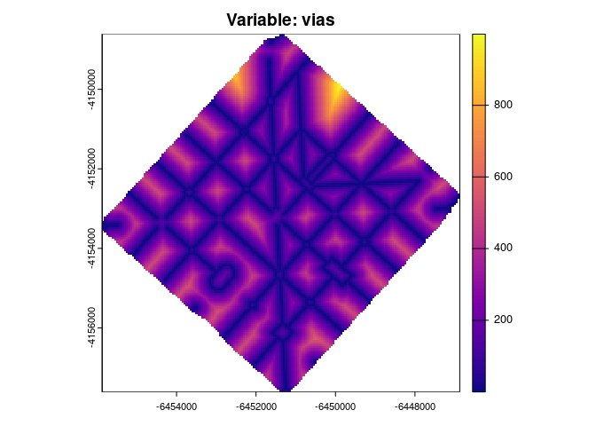
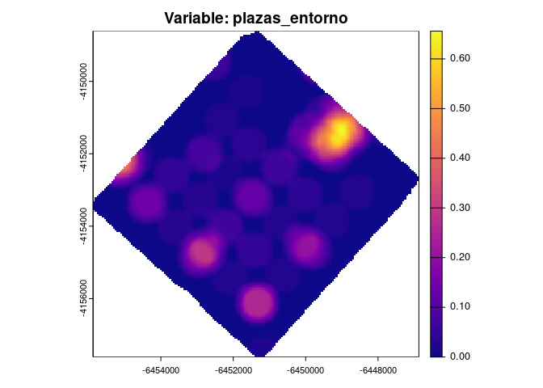
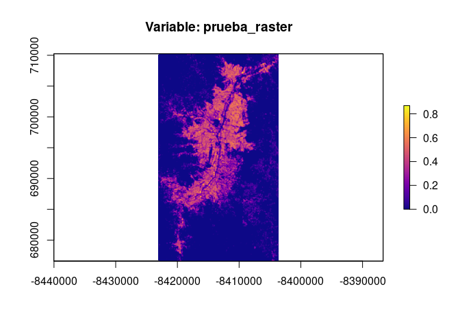
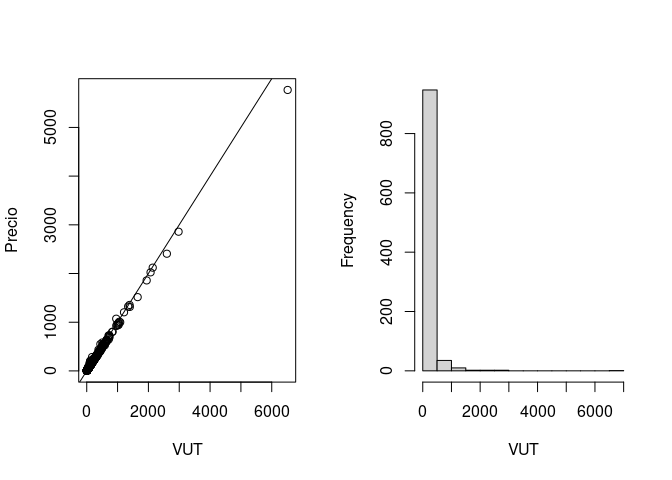
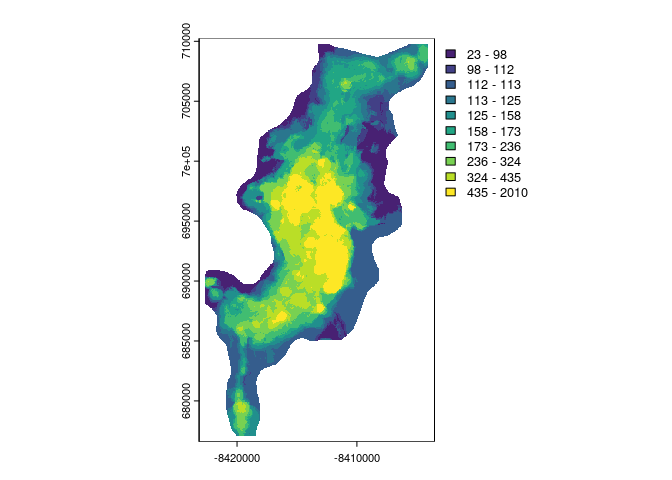

Este paquete provee una serie de funciones orientadas a facilitar el proceso de valuación de inmuebles, siguiendo el desarrollo de Eguino & Carranza (2025). Sin embargo, puede ser también de utilidad para la predicción de la distribución espacial de cualquier tipo de fenómeno geográfico.
El flujo de trabajo propuesto apunta a la generación de herramientas para facilitar las siguientes acciones:
- Creación de variables territoriales que informan sobre la distancia a diferentes hitos o las características de determinados entornos.
- Homogeneización de valores para descontar los efectos de características intrínsecas de las observaciones. muestrales. Por ejemplo, en el caso de la valuación de la tierra, se descuentan los efectos sobre el precio por metro cuadrado de la forma de las parcelas, su ubicación en la cuadra o el tamaño del lote.
- Diferentes alternativas para la identificación de observaciones muestrales espacialmente atípicas.
- Entrenamiento de diferentes modelos de aprendizaje computacional y estimación del nivel de error esperado fuera de la muestra.
- Simulación de escenarios que permiten conocer la magnitud y extensión geográfica de diferentes externalidades generadas por modificaciones en las variables independientes sobre el precio de los inmuebles.
Instalación
La forma recomendada de instalar el paquete es desde R-universe, que ofrece versiones precompiladas para Windows, macOS y Linux:
install.packages("valuate", repos = c("https://r-valuate.r-universe.dev",
"https://cloud.r-project.org"))También es posible instalar la versión de desarrollo directamente desde GitHub:
remotes::install_github("r-valuate/valuate")Los rásters de ejemplo de la ciudad de Medellín (Colombia) que se utilizan más abajo no se incluyen en el paquete por su tamaño. La función descargar_datos() los descarga la primera vez que se utilizan y los guarda en una carpeta local, por lo que las siguientes veces no es necesario volver a descargarlos.
Contenidos
La función calcular_dist() permite generar un ráster que informa la distancia de cada píxel hacia el hito más cercano.
Por ejemplo, si se desea conocer la distancia a la vía primaria más cercana en la ciudad de La Plata (Argentina):
# Definimos el área de estudio
area_de_estudio <- nominatimlite::geo_lite_sf(address = "La Plata, Argentina", points_only = F)
bbox = sf::st_transform(area_de_estudio, 4326) |> sf::st_bbox(bbox)
# Descargamos las vias principales
vias_prim <- osmdata::opq(bbox) |>
osmdata::add_osm_feature(key = "highway", value = "secondary") |>
osmdata::osmdata_sf()
vias_prim <- vias_prim$osm_lines
# Calculamos un ráster con las distancias a la vía principal más cercana
vias <- calcular_dist(area = area_de_estudio,
objeto = vias_prim,
dim = 50,
nombre = "vias")
#> El proceso de calculo ha finalizado. El raster resultante tambien fue guardado en el directorio de trabajo con el nombre vias.tif.La función calcular_entorno() resume las características de un entorno definido por el usuario, a partir de capas geográficas vectoriales de polígonos o de puntos. Cuando se le provee un objeto espacial “sf” con geometría “POLYGON” o “MULTIPOLYGON” la función permite calcular variables independientes que resumen las características del vecindario, indicando la proporción del espacio que se encuentra cubierto por los polígonos de interés. Por ejemplo, permite calcular el porcentaje del vecindario que se encuentra cubierto por plazas o parques. Cuando se le provee un objeto espacial “sf” con geometría “POINT” la función permite calcular variables independientes que resumen las características del vecindario, indicando la cantidad de puntos de interés que se encuentran dentro del entorno definido por el usuario. Por ejemplo, permite calcular la cantidad de negocios u oficinas que se encuentran dentro de un radio de “x” metros de cada píxel.
Por ejemplo, si se desea conocer información sobre los espacios verdes en el vecindario en la ciudad de La Plata (Argentina):
# Definimos el área de estudio
area_de_estudio <- nominatimlite::geo_lite_sf(address = "La Plata, Argentina", points_only = F)
bbox = sf::st_transform(area_de_estudio, 4326) |> sf::st_bbox(bbox)
# Descargamos los parques que se encuentran dentro del área de estudio
plazas <- osmdata::opq(bbox) |>
osmdata::add_osm_feature(key = "leisure", value = "park") |>
osmdata::osmdata_sf()
plazas <- plazas$osm_polygons
# Calculamos un ráster que resume, para cada píxel las características del entorno
plazas_entorno <- calcular_entorno(area = area_de_estudio,
ext = 500,
objeto = plazas,
dim = 50,
nombre = "plazas_entorno")
#> Warning in CPL_transform(x, crs, aoi, pipeline, reverse, desired_accuracy, :
#> GDAL Error 1: PROJ: proj_as_wkt: DatumEnsemble can only be exported to
#> WKT2:2019
#> El proceso de calculo ha finalizado. El raster resultante tambien fue guardado en el directorio de trabajo con el nombre plazas_entorno.tif.La función calcular_raster() devuelve un ráster que resume el cálculo realizado a partir de otro ráster, incluyendo fuentes de datos con diferente proyección y resolución espacial. La función permite readecuar las resoluciones y proyecciones de diferentes rásters a las utilizadas en el proyecto. Además, el paŕametro “entorno” permite realizar un cálculo del promedio de la variable bajo análisis en el vecindario definido por el usuario. Por ejemplo, si se desea readecuar a los criterios de un proyecto un ráster que informa sobre el porcentaje de edificaciones detectadas en un píxel a partir de una imagen satelital en la ciudad de Medellín (Colombia):
original <- terra::rast(descargar_datos("edificaciones.tif"))
area_de_estudio <- sf::st_read(system.file("extdata/area.gpkg", package = "valuate"), quiet = TRUE)
edificaciones <- calcular_raster(original, area_de_estudio, dim = 50, entorno = 100,
nombre = "edificaciones")
#> El proceso de calculo ha finalizado. El raster resultante tambien fue guardado en el directorio de trabajo con el nombre edificaciones.tif.La función calcular_vut() estima el valor de las obervaciones muestrales expresado en términos homogéneos o comparables. La función estima el precio por metro cuadrado homogeneizado, siguiendo a Carranza (2024). Toma como input un objeto espacial ‘sf’ y ajusta coeficientes de corrección según diferentes variables definidas por el usuario para reexpresar el precio en término de un ‘lote típico’ para el área de estudio. La función devuelve una lista con dos elementos: “datos”, que consiste en el df original al cual se agrega una columna correspondiente al valor homogeneizado (vut) y otra columna con el coeficiente de homogeneización aplicado (coef); y “efectos”, una tabla con los efectos estimados. Se informa, además, el parámetro de ajuste estimado por el modelo lineal para cada una de las variables independientes involucradas en el proceso de homogeneización.
Por ejemplo, suponga que se desea descontar los efectos sobre el precio por metro cuadrado de los lotes muestreados en la ciudad de Córdoba (Argentina) de las siguientes características: si se trata de una oferta o una venta, si se trata de una operación con o sin escritura, la superficie de cada lote.
# Cargamos los datos correspondientes a una muestra de 1000 terrenos.
data("terrenos", package = "valuate")
# Se define como "lote típico" a aquel que se corresponde a una operación de
# venta, realizada con escritura, y de una superficie igual a la mediana
# de los lotes de la ciudad.
# Se indica que la variable que informa sobre el precio por metro cuadrado
# es "valor_m2".
# Se define al vecindario en base a una distancia euclidiana de 500 metros.
vut <- calcular_vut(df = terrenos,
index = "id",
independientes = c("tipo_valor" = "Venta",
"superficie" = "mediana",
"situacion_juridica" = "Con Escritura"),
dependiente = "valor_m2",
dist = 500)
#> Se eliminaran 1 observaciones con datos faltantes
#> Se procedera a realizar correcciones por dependencia espacial aplicando un modelo SARMA.
#> Este proceso puede demorar varios minutos, dependiendo de la cantidad de observaciones en la muestra.
#> Se procedera a calcular el valor unitario de referencia...
#> El proceso de homogeneizacion ha finalizado.
#> Los efectos estadisticamente significativos fueron los siguientes:| Variable | p-valor | Efecto |
|---|---|---|
| superficie | 0.0000000 | -0.3770692 |
| situacion_juridicaSin título/Posesión | 0.0026828 | -0.5532533 |
La función entrenar_modelo() permite entrenar modelos y cuantificar su error en la predicción del valor de los inmuebles (o cualquier otra variable territorial que se esté analizando). Esta función implementa un flujo completo de entrenamiento, evaluación y ajuste de un modelo supervisado para la estimación de una variable dependiente a partir de un conjunto de variables independientes en formato ráster. Específicamente, está diseñada para trabajar con datos espaciales almacenados en un dataframe con geometría de tipo ‘POINT’, usando herramientas de las librerías ‘sf’ y ‘terra’. El proceso se desarrolla en los siguientes pasos principales:
Preprocesamiento de datos: Los rásters de las variables independientes se combinan con el dataframe espacial mediante la extracción de valores correspondientes a los puntos de la geometría. Los datos se depuran eliminando filas con valores faltantes.
Configuración del modelo: Se define un modelo a través de la librería ‘caret’, con soporte para una amplia variedad de algoritmos. El modelo predeterminado es Quantile Regression Forest (QRF), aunque se pueden especificar otros métodos soportados por ‘caret’.
Entrenamiento iterativo: La función utiliza validación cruzada de 10 particiones para evaluar el error medio absoluto porcentual (MAPE) fuera de la muestra. Si el MAPE promedio supera el umbral especificado, se eliminan observaciones cuyo MAPE individual sea igual o superior al 40%, y el modelo se entrena nuevamente con los datos restantes. Este proceso se repite hasta que el MAPE promedio cumpla con el umbral definido.
Generación de predicción espacial: Una vez finalizado el entrenamiento, el modelo entrenado se utiliza para interpolar las predicciones sobre los rásters de entrada, generando un nuevo ráster de salida que se guarda en el directorio de trabajo con el nombre ‘vut.tif’.
Salida de datos: La función devuelve una lista con la predicción (prediccion), el modelo entrenado (modelo), los datos que cumplieron con el umbral de error (utilizados) y los datos descartados por errores altos (eliminados).
La función está optimizada para aplicaciones que requieren análisis espaciales precisos y está diseñada para integrarse en flujos de trabajo geoespaciales complejos. Además, emplea paralelización para acelerar el proceso de entrenamiento en máquinas con múltiples núcleos. El diseño de esta función está orientado a contextos donde es crucial garantizar una alta precisión en la estimación, especialmente en aplicaciones que involucran modelización espacial o análisis urbano. Además, facilita la integración con flujos de trabajo basados en datos geoespaciales mediante las librerías ‘sf’ y ‘raster’.
# A continuación se presenta un ejemplo para la Ciudad de Medellín (Colombia), con sólo 500 datos.
data("datos", package = "valuate")
rasters <- descargar_datos(c("dist_basura.tif", "dist_industria.tif", "dist_plazas_parques.tif",
"dist_tren.tif", "dist_vias_autopista.tif", "dist_vias_prim.tif",
"dist_vias_sec.tif", "entorno_altura.tif", "entorno_plazas_parques.tif",
"entorno_comercios.tif", "entorno_edificaciones.tif", "entorno_hoteles.tif"))
modelo <- entrenar_modelo(df = dat,
dependiente = "vut",
independientes = rasters,
modelo = "qrf",
umbral = 0.3)
#> ...entrenando modelo...
#> El entrenamiento ha finalizado.
#> El MAPE fue igual a +/- 28.67%.
#> ...realizando interpolacion...
#> |---------|---------|---------|---------|========================================= 
#> En el directorio de trabajo se ha guardado un raster con la prediccion, con el nombre 'vut.tif'.
#> En el directorio de trabajo se ha guardado un archivo con el modelo aplicado, con el nombre 'modelo.rda'.Los distintos resultados quedan disponibles en el objeto devuelto por la función: por ejemplo, modelo$prediccion contiene el ráster con la predicción y modelo$eliminados los datos descartados.
Finalmente, la función simular_escenario() permite, a partir de la predicción de la distribución espacial de una variable, estimar escenarios a partir de la simulación de alteraciones en alguna (o algunas) de las variables independientes. La función devuelve un ráster que informa sobre el impacto en la variable dependiente de las simulaciones realizadas en las variables independientes. Permite estimar la magnitud y el alcance territorial de las modificaciones simuladas sobre la variable de estudio.
Referencias
Eguino, H., & Carranza, J. P. (2025). Ciencia de datos, finanzas locales y gestión territorial: modelos de valuación, simulaciones y código abierto para la gestión fiscal y el financiamiento urbano. https://doi.org/10.18235/0013669
Carranza, J.P. (2024). “Inteligencia artificial aplicada a políticas de valuación masiva de la tierra urbana”. Tesis de Doctorado en Administración y Política Pública. IIFAP, Facultad de Ciencias Sociales, Universidad Nacional de Córdoba. Córdoba, Argentina. https://dialnet.unirioja.es/servlet/tesis?codigo=374854